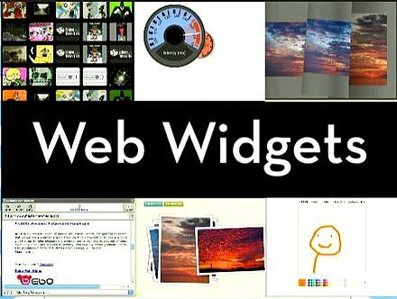

Web Widget
Additional functions that you can easily insert into a web page.
Its main objective is to enrich the content and some functions of the site.
A web widget is a web page or web application that is embedded as
an element of a host web page but which is substantially independent of the host page, having limited or no interaction
with the host. A web widget commonly provides users of the host page access to resources from another web
site, content that the host page may be prevented from accessing itself by the browser's same-origin policy or the
content provider's CORS policy. That content includes advertising (Google's AdSense), sponsored external links
(Taboola),user comments (Disqus), social media buttons (Twitter), Facebook), news (USA Today), and weather (AccuWeather).
Some web widgets though serve as user-selectable customizations of the host page itself (My Yahoo!).
Technology
Widgets may be considered as downloadable applications which look and
act like traditional apps but are implemented using web technologies including JavaScript, Flash, HTML and CSS.
Widgets use and depend on web APIs exposed either by the browser or by a widget engine such as Akamai, Clearspring,
KickApps, MassPublisher, NewsGator or many others.
Sites such as FormLoop allow users to easily create widgets from their own
content with no coding knowledge necessary.
